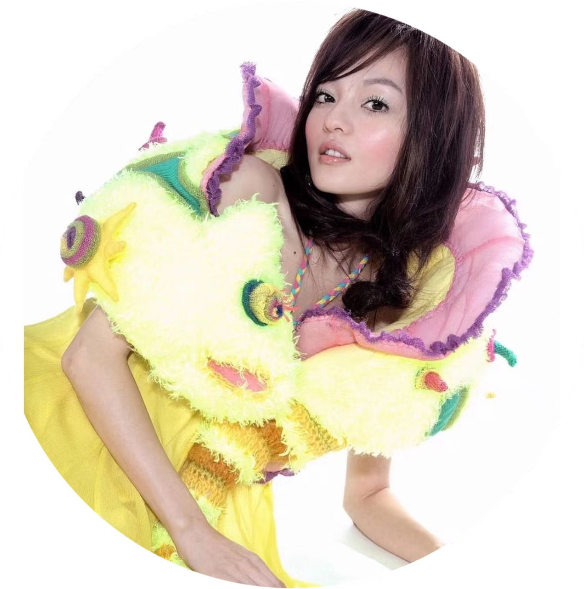

0:00
0:00
歌词
隐形的翅膀 - 张韶涵
词：王雅君
曲：王雅君
编曲：陈俊廷
每一次
都在徘徊孤单中坚强
每一次
就算很受伤 也不闪泪光
我知道
我一直有双隐形的翅膀
带我飞
飞过绝望
不去想
他们拥有美丽的太阳
我看见
每天的夕阳 也会有变化
我知道
我一直有双隐形的翅膀
带我飞
给我希望
我终于 看到
所有梦想都开花
追逐的年轻
歌声多嘹亮
我终于 翱翔
用心凝望不害怕
哪里会有风
就飞多远吧
不去想
他们拥有美丽的太阳
我看见
每天的夕阳 也会有变化
我知道
我一直有双隐形的翅膀
带我飞
给我希望
我终于 看到
所有梦想都开花
追逐的年轻
歌声多嘹亮
我终于 翱翔
用心凝望不害怕
哪里会有风
就飞多远吧
隐形的翅膀
让梦恒久比天长
留一个 愿望
让自己想象